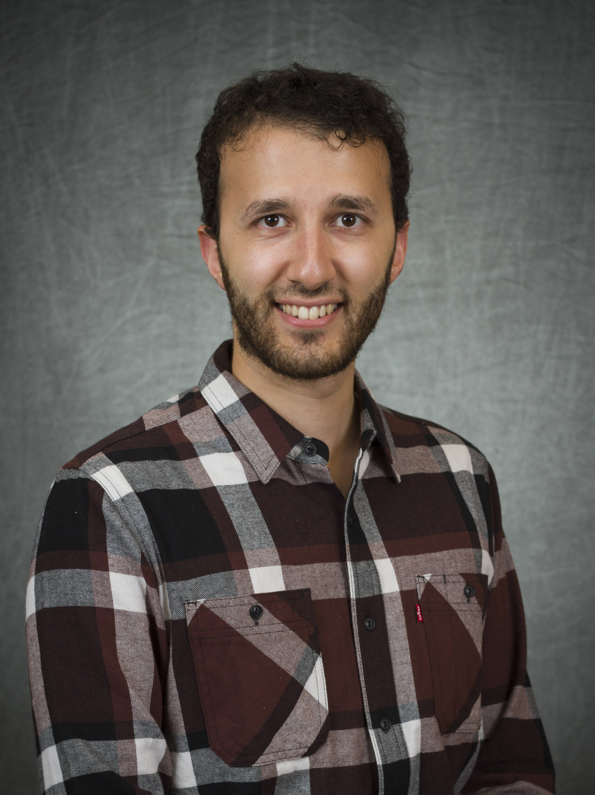

About Me



السلام عليكم ورحمة الله وبركاته
Hello!
I'm an assistant professor in the College of Computer Science and Engineering at Taibah University. I teach cybersecurity and computer networking courses.
My research area includes network security, vulnerability analysis, interaction of ML & security, and advanced persistent threats.
News
- Joined Taibah University as an assistant professor in the college of computer and information science -- Aug 2023
- Our paper "Unraveled—A semi-synthetic dataset for Advanced Persistent Threats" is Accepted to the Computer Networks Journal. Checkout it for free here -- May 2023
- Our paper "IoT System Vulnerability Analysis and Network Hardening with Shortest Attack Trace in a Weighted Attack Graph" won the best paper award in the IoTDI'23 conference -- May 2023
- Finally completed my PhD at Arizona State Universtiy and successfully defended my dissertation -- April 2023
Publications
- For a complete list of publications, please check my Google Scholar.
Teaching
Fall 2023
- COE 331 Business Data Communication. Syllabus .
Spring 2023
- CSE 486 Capstone Project. Syllabus .
Fall 2022
- CSE 548 Advanced Computer Network Security. Syllabus .
- FSE 100 Introduction to Engineering. Syllabus .
- ASU 101 The ASU Experiance. Syllabus .
Contact Me
Feel free to reach out to me at [asabur@taibahu.edu.sa] or connect with me on LinkedIn.